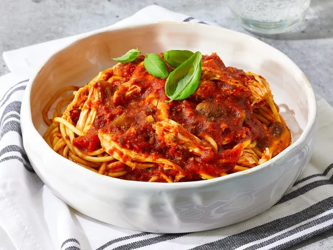

Home
Chicken Cacciatore

This chicken cacciatore crockpot recipe is very simple to make. You just throw everything in the slow cooker and let it cook during the day.
I like to serve this over thin spaghetti — especially garlic and herb thin spaghetti, when I can find it.
Ingridients:
- 4 skinless, boneless chicken breast halves
- 1 (28 ounce) jar spaghetti sauce
- 1 (6 ounce) can tomato paste
- 4 ounces sliced fresh mushrooms
- ½ yellow onion, minced
- ½ green bell pepper, seeded and diced
- 3 tablespoons minced garlic
- 1 ½ teaspoons dried oregano
- ½ teaspoon dried basil
- ½ teaspoon ground black pepper
- ¼ teaspoon red pepper flakes (Optional)
Directions:
- Gather all ingredients.
- Place chicken in a slow cooker.
- Stir in spaghetti sauce, tomato paste, mushrooms, onion, bell pepper, garlic, oregano, basil, black pepper, and red pepper flakes.
- Cover and cook on Low until chicken is tender, 6 to 8 hours.